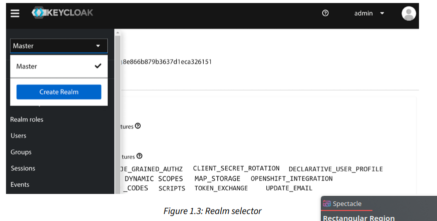

لو إنت لسه جديد على Keycloak، الشابتر ده هيدخلك في الموضوع على طول. هنبدأ بمقدمة سريعة عن Keycloak هو إيه. بعدها، هتشوف بنفسك قد إيه سهل إنك تسطبه (تعمله install) وتشغله. بعد ما نشغل Keycloak، هنتعرف على الـ admin console بتاعته، ودي gui interface ممتازة عشان تدير وتظبط إعدادات Keycloak. وفي الآخر، هنبص بصة سريعة على الـ account console، ودي اللي بتخلي المستخدمين بتوع تطبيقاتك يديروا حساباتهم بنفسهم.
لما نخلص الشابتر ده، هتكون عرفت إزاي تبدأ شغل على Keycloak server، وهتفهم إزاي تستخدم الـ admin console عشان تدير Keycloak. وهتتعلم إزاي تجهز Keycloak بيوزر كمثال عشان نبدأ نأمّن أول تطبيق ليك في الشابتر اللي جاي.
في الشابتر ده، هنتكلم عن المواضيع دي:
مقدمة عن Keycloak.
تسطيب وتشغيل Keycloak.
استكشاف الـ admin console والـ account console بتوع Keycloak.
technical requirementsعشان تشغل Keycloak في الشابتر ده، هتحتاج يكون متسطب عندك Docker أو JDK 17+.
Keycloak هو أداة open source لي(Identity and Access Management)، وبيركز بشكل أساسي على التطبيقات الحديثة زي الـ single-page applications، وتطبيقات الموبايل، والـ REST APIs.
المشروع بدأ سنة 2014 وكان تركيزه الأساسي إنه يسهّل على المطورين تأمين تطبيقاتهم. ومن وقتها، المشروع كبر وبقى ليه مجتمع قوي وقاعدة مستخدمين كبيرة. بيتم استخدامه في سيناريوهات حقيقية على أرض الواقع، بداية من المواقع الصغيرة اللي فيها عدد قليل من المستخدمين، ولحد الشركات الضخمة اللي عندها ملايين المستخدمين.
Keycloak بيديك صفحات login تقدر customize ليه بالكامل، وبيدعم وسائل الـ authentication القوية، وفيه إمكانيات جاهزة زي استعادة الباسورد، وإجبار المستخدمين على تحديث باسورداتهم بشكل دوري، وزاي تجبره يقراء الشروط والأحكام، وحاجات تانية كتير. كل ده من غير ما تحتاج تضيف أي حاجة في تطبيقاتك، أو تكتب أي كود خالص. كل الصفحات اللي بتظهر للمستخدمين بتدعم انك تعمل customize ليه بـ(html ,css ,......)، وده بيخلي تغيير شكلها سهل جداً عشان تتماشى مع هوية شركتك وتطبيقاتك الحالية.
لما بترمي مسئولية الـ authentication على Keycloak، تطبيقاتك مش بتحتاج تقلق بخصوص طرق الـ authentication المختلفة، أو إزاي تخزن الباسوردات بشكل آمن. الطريقة دي كمان بتدي مستوى أمان أعلى، لإن التطبيقات مش بتوصل مباشرة لبيانات دخول اليوزر (user credentials)؛ بدل كده، بتاخد security tokens بتديلها صلاحية توصل للحاجات اللي محتاجاها
Tip
لما نقول إن تطبيقاتك "ملهاش وصول"، فالمقصود بشكل مباشر إن سيرفر الأبلكيشن بتاعك لا يستقبل أو يتعامل مع الـ password الخاص باليوزر. العملية كلها بتتم بعيد عنه. لما اليوزر بيحتاج يعمل login، الأبلكيشن بتاعك بيعمله redirect لصفحة الـ login اللي على سيرفر Keycloak. اليوزر بيدخل الـ credentials بتاعته هناك، وبالتالي الـ POST request اللي بيحتوي على الـ password بيروح مباشرة لسيرفر Keycloak، مش لسيرفر تطبيقك.
بعد ما Keycloak يتأكد إن الـ password سليم، هو مش بيرجّع الباسورد لتطبيقك، لأ، هو بيعمل generate لـ security token. التوكن ده عبارة عن (jwt فى الغالب) بيقول إن اليوزر ده تمام وعمل authenticate بنجاح. بعدها Keycloak بيرجّع اليوزر تاني لتطبيقك ومعاه الـ token ده. تطبيقك بياخد التوكن، وبيتأكد من الـ signature بتاعته عشان يضمن إنه موثوق ومحدش تلاعب فيه، وبناءً على المعلومات اللي جوه التوكن زي الـ user ID والـ roles، بيمنحه صلاحية الدخول. وبالطريقة دي، الأبلكيشن بتاعك بيعتمد على الثقة في التوكن اللي جايله من Keycloak من غير ما يضطر يشوف أو يخزن أي password، وده بيرفع مستوى الأمان بشكل ضخم.
ولما بنتكلم عن الـ authentication، فـ Keycloak بيدعم أنواع كتير من factors الـ authentication، وده بيخليك تقدر تفعل بسهولة الـ Multi-Factor Authentication (MFA)
والـ Strong Authentication (SA) لتطبيقاتك. وزي ما هتشوف في شابتر 11، بخطوات قليلة جداً هتقدر تختار إن المستخدمين يعملوا authentication عن طريق OTPs ، أو أجهزة الأمان والـ WebAuthn، أو الباسوردات، أو أي خليط من كل ده.
Keycloak بيديك single sign-on (تسجيل دخول مرة واحدة) وكمان إمكانيات
(session management)، وده بيسمح للمستخدمين يدخلوا على كذا تطبيق وهما محتاجين يعملوا authentication مرة واحدة بس. المستخدمين نفسهم والـ administrators عندهم رؤية كاملة لكل الأماكن اللي المستخدمين عاملين login فيها، ويقدروا يقفلوا أي session عن بعد لو احتاجوا.
Keycloak مبني على بروتوكولات standerd زي OAuth 2.0، و OpenID Connect، و SAML 2.0. استخدام بروتوكولات standerd زي دي مهم من ناحية الأمان، وكمان بيسهل التكامل مع التطبيقات الحالية والجديدة.
Keycloak بييجي معاه قاعدة بيانات للمستخدمين بتاعته، وده بيخلي البداية سهلة جداً. وممكن كمان تدمجه بسهولة مع Identity Management Systems اللي عندك. من خلال قدرات الـ identity brokering، تقدر توصل قواعد المستخدمين الموجودة عندك من social website (زي فيسبوك وجوجل) أو أي enterprise identity providers تانية. وكمان يقدر يتكامل مع Active Directory و LDAP servers.
Keycloak هو حل خفيف وسهل تسطبه. هو كمان highly scalable وبيدعم الـ high availability ) من خلال إمكانيات الـ clustering.
Keycloak اتعمل من الأساس عشان يكون جاهز للاستخدام out-of-the-box لأغلب السيناريوهات الشائعة، لكن قوته الحقيقية إنه highly customizable و extendable. التصميم بتاعه فيه نقط محددة اسمها extension points، ودي عبارة عن "أماكن" تقدر تدخل منها بالـ custom code بتاعك عشان تغير في طريقة عمل Keycloak الأساسية أو تضيف عليه إمكانيات جديدة بالكامل.
كمثال، عن طريق الـ extension points دي تقدر تعمل: custom authentication methods خاصة بشركتك، أو تعمل integration مع user databases قديمة موجودة عندك بالفعل، أو تعمل customization للـ tokens عشان تضيف أو تشيل منها معلومات معينة. الموضوع flexible لدرجة إنك لو احتجت، تقدر تبني login protocols كاملة خاصة بيك وتضيفها على النظام. باختصار، هو بيديلك أساس قوي، وفي نفس الوقت بيسيبلك المساحة تعمل أي custom logic تحتاجه.
الجزء ده كان مقدمة سريعة جداً لمميزات وإمكانيات Keycloak. وبما إن هدف الكتاب ده إنه يديك دليل عملي لـ Keycloak، إحنا هنرجع لمعظم المميزات دي في شباتر جاية، وهناك هتتعلم بنفسك إزاي تستخدمها.
في الجزء ده، هتتعلم بسرعة إزاي تسطب وتشغل Keycloak. وبمجرد ما Keycloak يشتغل، هنبص على الـ admin console والـ account console.
Keycloak بيوفر كذا طريقة للتسطيب، منها:
تشغيله كـ container على Docker.
تسطيبه وتشغيله على جهازك مباشرة (وده هيحتاج Java virtual machine زي OpenJDK).
تشغيله على Kubernetes.
استخدام Keycloak Kubernetes Operator.
لو عندك Docker متسطب على جهازك، فدي هي الطريقة اللي بننصح بيها لأنها أسهل وأسرع طريقة تشغله بيها.
لو معندكش Docker، يبقى الأسهل إنك تبدأ بتسطيبه وتشغيله على جهازك مباشرة. الحاجة الوحيدة اللي هتحتاجها هي Java virtual machine.
Keycloak كمان ممكن يتنشر بسهولة على Kubernetes، وهناك عندك اختيار إنك تستخدم Keycloak Kubernetes Operator، وده بيخلي التسطيب والإعدادات والإدارة أسهل كمان. إحنا مش هنشرح خطوات Kubernetes في الكتاب ده، عشان عايزين نركز أكتر على Keycloak نفسه ومميزاته.
مع Docker، تشغيل Keycloak سهل جداً لإنك مش محتاج تسطب Java virtual machine بنفسك، ولا محتاج تنزل وتفك ملفات Keycloak.
عشان تشغل Keycloak على Docker، ببساطة نفذ الأمر التالي:
$ docker run -e KEYCLOAK_ADMIN=admin -e KEYCLOAK_ADMIN_PASSWORD=admin -p 8080:8080 quay.io/keycloak/keycloak:22.0.0 start-devبما إن Keycloak مش بييجي معاه حساب admin افتراضي، فالجزء بتاع KEYCLOAK_ADMIN و KEYCLOAK_ADMIN_PASSWORD في الأمر ده بيسهل عليك إنك تعمل حساب admin مبدئي.
إحنا كمان بنستخدم –p 8080:8080 عشان نفتح الـ port اللي بيستخدمه Keycloak على جهازنا، عشان نقدر نوصله بسهولة.
بعد كام ثانية، تقدر تتأكد إن Keycloak اشتغل بإنك تفتح اللينك ده http://localhost:8080/admin وتعمل login باليوزرنيم admin والباسورد admin.
ألف مبروك! كده Keycloak قام عندك واشتغل كـ Docker container، ودلوقتي نقدر نبدأ نكتشف الـ admin console والـ account console عشان نشوف الدنيا فيها إيه.
Keycloak باستخدام OpenJDKبما إن Keycloak معمول بلغة Java، فسهل أوي تشغله على أي نظام تشغيل من غير ما تحتاج تسطب أي حاجة زيادة. كل اللي هتحتاجه هو Java virtual machine، زي OpenJDK.
في الجزء الجاي ده، هنسطب OpenJDK، وده ضروري قبل ما نشغل Keycloak. لو إنت أصلاً عندك Java متسطبة على جهازك، ممكن تفوت الجزء ده وتخش على طول على جزء "تسطيب Keycloak".
OpenJDKعشان تسطب Keycloak، لازم يكون عندك Java إصدار 17 (JRE).
هتروح على اللينك ده: adoptium.net/temurin/archive، ومن هناك نزل OpenJDK إصدار 17 المناسب لنظام التشغيل بتاعك. بعد ما ينزل، فك ضغطه في مكان مناسب، وبعدين ظبط environment variableاللي اسمه JAVA_HOME عشان يشاور على مكان الفولدر اللي فكيت فيه الضغط.
دي مثال بالأوامر على نظام Linux:
xxxxxxxxxx$ mkdir ~/kc-book$ cd ~/kc-book$ tar xfvz ~/Downloads/OpenJDK17U-jdk_x64_linux_hotspot_17.0.6_10.tar.gz$ export JAVA_HOME=~/kc-book/jdk-17.0.6+10$ $JAVA_HOME/bin/java -versionالأمر الأخيرjava -version مجرد بيتأكد إن Java اشتغلت تمام.
دلوقتي بعد ما OpenJDK اتسطب، يلا بينا نخش على تسطيب Keycloak نفسه.
Keycloakبمجرد ما Java تكون متسطبة على جهازك، الخطوة الجاية هي إنك تنزل توزيعة Keycloak من موقعه الرسمي. افتح اللينك ده https://www.keycloak.org/downloads ونزل ملف السيرفر (سواء ZIP أو TAR.GZ). بعد ما ينزل، فك ضغطه في مكان مناسب.
ده مثال بالأوامر على Linux:
xxxxxxxxxx$ unzip ~/Downloads/keycloak-22.0.0.zip$ export KC_HOME=~/kc-book/keycloak-22.0.0إنت دلوقتي جاهز تشغل Keycloak، وده اللي هنعمله دلوقتي.
Keycloakبعد ما سطبت Keycloak، تشغيله سهل.
على Linux أو macOS، شغل Keycloak بالأوامر دي:
xxxxxxxxxx$ export KEYCLOAK_ADMIN=admin$ export KEYCLOAK_ADMIN_PASSWORD=admin$ cd $KC_HOME$ bin/kc.sh start-devأو على Windows، نفذ الأوامر دي:
xxxxxxxxxx> set KEYCLOAK_ADMIN=admin> set KEYCLOAK_ADMIN_PASSWORD=admin> cd %KC_HOME%> bin\kc.bat start-devملحوظة: بما إن Keycloak مش بييجي معاه حساب admin افتراضي، احنا بنستخدم متغيرات KEYCLOAK_ADMIN و KEYCLOAK_ADMIN_PASSWORD عشان نعمل حساب admin مبدئي بسهولة.
بعد كام ثانية، عشان تتأكد إن Keycloak اشتغل، افتح اللينك ده http://localhost:8080/admin واعمل login باليوزرنيم admin والباسورد admin.
ألف مبروك تاني! كده Keycloak شغال على جهازك وتقدر تبدأ تجربته بأنك تستكشف الـ admin console والـ account console.
admin والـ account consolesفي الجزء ده، هنبص بصة على الـ admin console والـ account console.
الـ admin console: دي لوحة التحكم الشاملة اللي بتخليك تظبط وتدير كل حاجة في Keycloak.
الـ account console: دي بقى معمولة عشان المستخدمين النهائيين بتوع تطبيقاتك يقدروا يديروا حساباتهم بنفسهم.
Keycloak admin consoleهنا هتتعلم إزاي تعمل login على الـ admin console وتظبط الإعدادات الأساسية اللي هتحتاجها عشان تأمن أول تطبيق ليك.
الـ admin console بتوفر gui قوية وسهلة للـ administrators والمطورين عشان يديروا Keycloak.
عشان توصلها، افتح اللينك ده في المتصفح: http://localhost:8080/admin. هيحولك على صفحة الـ login بتاعة Keycloak، وهناك هتدخل اليوزرنيم والباسورد بتوع الـ admin اللي عملناهم في الخطوة اللي فاتت.
أول ما تعمل login، هتشوف قدامك الإعدادات الخاصة بالـ master realm جوه Keycloak، زي ما في الصورة الجاية.
إنت هتتعلم تفاصيل أكتر بكتير عن الـ admin console دي وإحنا ماشيين في الكتاب، بس دلوقتي خلينا نمشي على كام خطوة بسيطة عشان نجهز Keycloak بتاعنا إنه يبدأ يأمن التطبيقات.
realmأول حاجة هتحتاج تعملها هي إنك تنشئ realm للتطبيقات والمستخدمين بتوعك. فكر في الـ realm ده كأنه tenant . كل realm بيكون معزول تماماً عن الـ realms التانية؛ ليه الإعدادات بتاعته، ومجموعة التطبيقات بتاعته، والمستخدمين بتوعه.
الميزة دي بتخلي تسطيبة واحدة بس من Keycloak تقدر تخدم على أغراض كتير مختلفة. كمثال، ممكن تعمل realm للتطبيقات الداخلية والموظفين، وتعمل realm تاني خالص للتطبيقات الخارجية والعملاء.
عشان تعمل realm جديد، دوس على علامة القايمة اللي في الركن الشمالي فوق (على شمال لوجو Keycloak) عشان تفتح القايمة. بعدها، دوس على المكان اللي بتختار منه الـ realm عشان تظهرلك قايمة بالـ realms الموجودة، وهتلاقي معاهم زرار عشان تعمل realm جديد. دوس على زرار Create Realm:

في الصفحة اللي بعدها، دخل اسم للـ realm. وعشان الاسم ده بيستخدم في اللينكات (URLs)، يفضل إنه ميكونش فيه أي special characters محتاجة تتظبط في اللينكات (زي المسافات). بعد ما تعمله، تقدر تحطله اسم تاني سهل للقراءة (display name). كمثال، استخدم myrealm للاسم ، و My Realm للاسم اللي هيظهر للناس
بعد ما عملت الـ realm، يلا بينا نعمل أول user (مستخدم) جوه الـ realm ده:
من القايمة اللي على الشمال، دوس على Users، وبعدها دوس على زرار Create new user.
دخل username سهل تفتكره، ودخل كمان أي قيمة إنت عايزها للـ email والـ first nameوالـ last name .
اختيار Email Verified ده الـ administrator ممكن يعلم عليه لو هو متأكد إن الإيميل ده هو الإيميل الصح بتاع اليوزر.
خاصية Required User Actions بتخلي الـ administrator يجبر اليوزر إنه يعمل شوية حاجات أول ما يعمل login المرة الجاية؛ مثلاً، يخليه يراجع بياناته (review their profile)، أو يتأكد من الإيميل بتاعه (verify their email address).
ماتنساش تدوس على Create بعد ما تخلص الفورم (الاستمارة):
اليوزر ليه شوية بيانات أساسية جاهزة، زي First name، بس ممكن كمان تضيف أي خصائص تانية إنت عايزها (custom attributes) من خلال التاب اللي اسمه Attributes.
قبل ما اليوزر ده يقدر يعمل login، لازم تعمله باسورد مبدئي ومؤقت. عشان تعمل كده، دوس على التاب اللي اسمه Credentials. جوه التاب ده، دوس على زرار Set Password وامشي مع التعليمات عشان تحط باسورد جديد لليوزر.
لو اختيار Temporary ده متفعل، اليوزر هيكون لازم يغير الباسورد بتاعه أول ما يعمل login. وده منطقي جداً في الحالات اللي الـ administrator هو اللي بيعمل فيها حساب اليوزر.
group بعد كده، يلا نعمل group ( ونضيف فيها اليوزر اللي لسه عاملينه. من القايمة اللي على الشمال، دوس على Groups، وبعدها دوس على زرار Create group.
دخل اسم للـ group، مثلاً mygroup، وبعدين دوس Create.
بعد ما تعمل الـ group، هتشوفها في قايمة الـ groups. لو دوست عليها، هتقدر تعدل إعداداتها.
كمثال، تقدر تضيف attributes للـ group نفسه. أي user بينضم للـ group ده بيورث كل الـ attributes دي تلقائي. دي حاجة مفيدة جداً لو عندك مثلاً group لكل موظفين فرع معين، وعايز تضيف عنوان الفرع ده لكل الموظفين اللي في الـ group مرة واحدة.
ممكن كمان تدي roles (صلاحيات) للـ group، وبرضه كل أعضاء الـ group بيورثوها.
عشان تضيف اليوزر للـ group، ارجع لصفحة Users واختار اليوزر اللي عملته. بعدها، دوس على تاب Groups. جوه التاب ده، دوس Join Group، واختار الـ group اللي لسه عاملينه، ودوس Join عشان تضيف اليوزر.
Tip
معدش لازم تروح صفحة users وتضيفه للجروب لا عادي من members
global role عشان تعمل global role (صلاحية عامة على مستوى الـ realm كله)، دوس على Realm roles من القايمة اللي على الشمال، وبعدها دوس Create role. دخل اسم للـ role، مثلاً myrole. ممكن كمان تضيف وصف للـ role، وده بيبقى مفيد خصوصاً لو فيه administrators تانيين معاك.
أي role في Keycloak ممكن تحوله لـ composite role . دي بتسمح لك تضيف roles تانية جواها. أي user بياخد الـ composite role ده، هو كأنه أخد كل الـ roles اللي جواها بشكل تلقائي. الـ composite roles ممكن كمان تحتوي على composite roles تانية جواها. الميزة دي قوية جداً، بس في نفس الوقت لازم تستخدمها بحذر. إدارة الـ composite roles ممكن تكون صعبة شوية، وممكن كمان تأثر على الأداء (performance) لو استخدمتها زيادة عن اللزوم، خصوصاً لو عملت طبقات كتير من الـ composite roles جوه بعض.
Note
ببساطة شديدة، الـ composite role هو عبارة عن "باكدج" أو "حاوية" لمجموعة roles تانية. إنت بتعمل role عادي خالص، لكن بدل ما يكون له معنى في حد ذاته، بتستخدمه عشان يجمع عدد من الـ roles التانية تحته. لما تيجي تدي الـ user هذا الـ composite role، هو بشكل تلقائي بيورث كل الـ roles اللي إنت حطيتها جواه.
عشان تضيف اليوزر للـ role، ارجع لصفحة Users واختار اليوزر اللي عملته. بعدها، دوس على تاب Role mapping. جوه التاب ده، دوس Assign role، واختار الـ role اللي لسه عاملينه، ودوس Assign عشان تضيف اليوزر للـ role.
إنت دلوقتي خلصت كل الإعدادات المبدئية المطلوبة عشان تبدأ تأمن أول تطبيق ليك، بس الأول خلينا نبص بصة على الـ Keycloak account console، اللي بتخلي المستخدمين يديروا حساباتهم بنفسهم.
Keycloak account consoleالـ account console دي بتوفر واجهة للمستخدمين يقدروا يديروا بيها حساباتهم بنفسهم، زي مثلاً:
يحدثوا بياناتهم الشخصية (user profile).
يغيروا الباسورد بتاعهم.
يفعلوا (second-factor authentication).
يشوفوا التطبيقات، ومين التطبيقات اللي عملوا login عليها.
يشوفوا الـ sessions المفتوحة، ويقدروا يعملوا sign out من أي جهاز تاني عن بعد.
عشان توصل للـ account console، افتح اللينك ده في المتصفح:
http://localhost:8080/realms/myrealm/account (لو استخدمت اسم realm مختلف، غير كلمة myrealm بالاسم اللي إنت عملته). هيتم تحويلك لصفحة الـ login بتاعة Keycloak، وهناك هتعمل login باليوزرنيم والباسورد اللي عملتهم لليوزر بتاعك في الخطوة اللي فاتت:
انا
ملحوظة: ممكن كمان تلاقي اللينك بتاع الـ account console من جوه الـ admin console نفسها.
في الـ admin console، دوس على Clients، وهناك هتلاقي اللينك بتاع الـ account console جنب الـ client اللي اسمه account.
إنت دلوقتي عرفت إن Keycloak مش بس بيديك admin console قوية وشاملة، لأ ده كمان بيديك console تانية للمستخدمين عشان يديروا بيها حساباتهم بنفسهم.
| وجه المقارنة | Admin Console | Account Console |
|---|---|---|
| مين بيستخدمها؟ | المدير (Administrator) أو المطور (Developer) | (End-User) |
| وظيفتها إيه؟ | إدارة وتظبيط نظام Keycloak بالكامل | إدارة الحساب الشخصي للمستخدم |
| بتتحكم في إيه؟ | كل الـ Realms، المستخدمين، التطبيقات، الصلاحيات | بيانات المستخدم الشخصية، باسورد، وأمان حسابه هو بس |
| إزاي توصلها؟ | http://localhost:8080/admin | http://localhost:8080/realms/<realm name>/account |